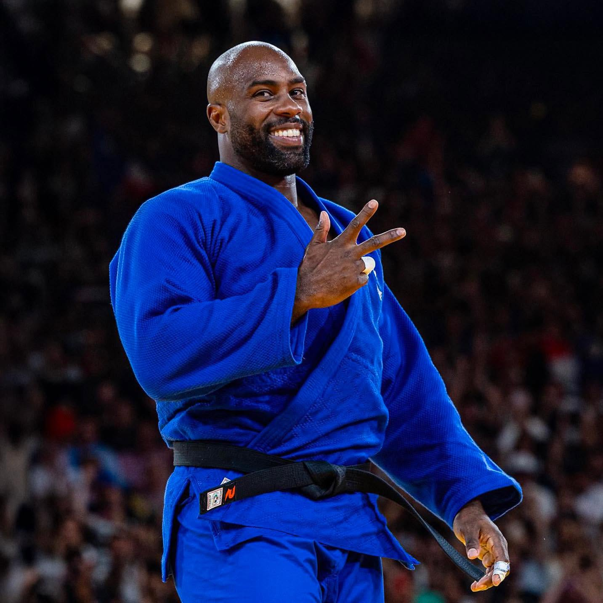

**Teddy Riner** (né le 7 avril 1989) est un judoka français qui a remporté dix titres de champion du monde et deux médailles d’or olympiques. Il est largement considéré comme l’un des plus grands judokas de tous les temps, reconnu pour sa technique exceptionnelle, sa puissance physique et sa domination dans ce sport. Teddy Riner est également une figure majeure dans la promotion du judo et des valeurs du sport à travers le monde.
